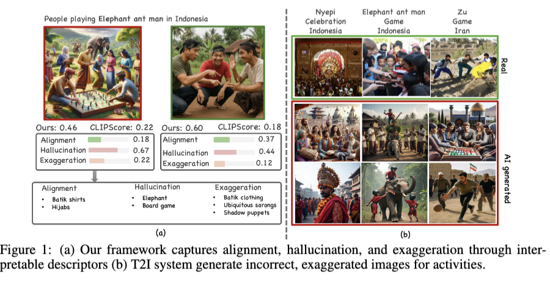

Culture in Action: Evaluating Text-to-Image Models through Social Activities
Abstract
Cultural nuances are best captured through social interactions, yet current text-to-image (T2I) benchmarks focus largely on object-centric artifacts (e.g., food, landmarks, and attire). In this work, we study the cultural faithfulness of T2I models through social activities. We introduce CULTIVate and AHEaD to evaluate cultural alignment, hallucination, exaggeration, and diversity.

Overview of CULTIVate benchmark and AHEaD framework.
BibTeX
@article{YourPaperKey2024,
title={Culture in Action: Evaluating Text-to-Image Models through Social Activities},
author={Malakouti, Sina and Gong, Boqing and Kovashka, Adriana},
journal={ICLR},
year={2026}
}